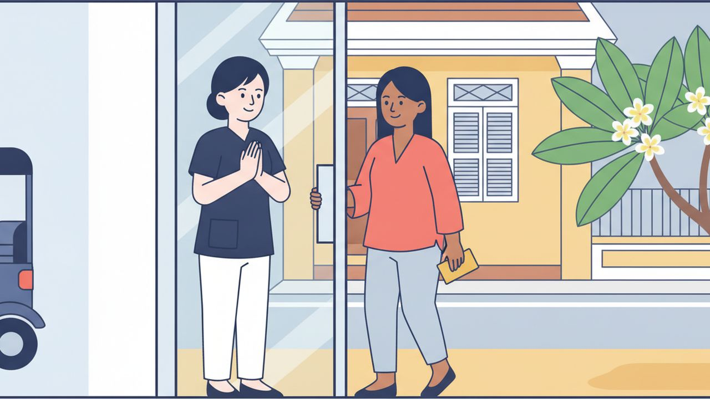

ロールプレイング ③
ドライヘッドスパのお見送り

場面設定
会計を終えたカンボジア人のお客様を、日本人の店員が出口まで案内して見送る場面。リピーター獲得のため、店員から「お友達を紹介すると、お二人とも割引になる」という紹介プログラムの案内をする。
登場人物: 受付スタッフ（店員）／お客様（បង、女性を想定）
保存されるファイル名: 03_ドライヘッドスパのお見送り_v1.0_20261105.pdf
会話
店員
អរគុណដែលអញ្ជើញមកហាងខាងខ្ញុំ។
お客様
អរគុណ។
ខ្ញុំចូលចិត្តខ្លាំងណាស់ ខ្ញុំនឹងមកម្តងទៀត។
店員
សូមអញ្ជើញមកជាមួយមិត្តភក្តិផងណា។
បើបងណែនាំមិត្តភក្តិម្នាក់ បងទាំងពីរនឹងទទួលបានការបញ្ចុះតម្លៃ។
お客様
អូ ល្អមែន!
ខ្ញុំនឹងប្រាប់មិត្តភក្តិ។
店員
អរគុណ។
សូមប្រយ័ត្នក្នុងការធ្វើដំណើរ ជួបគ្នាលើកក្រោយ។
フリートークにつながる質問
会話のあと、役を離れてこの質問で話を広げてみてください。答えは思いつく範囲で構いません。
質問 1
តើបងធ្លាប់ណែនាំហាងទៅកាន់មិត្តភក្តិដែរឬទេ?
質問 2
បើមាននរណាម្នាក់ប្រាប់បងថា ណែនាំមិត្តភក្តិនឹងទទួលបានការបញ្ចុះតម្លៃ
តើបងចង់ណែនាំដែរឬទេ?
扱った単語（16語）
| # | クメール語 | 読み方 | 意味 |
|---|---|---|---|
| 1 | អញ្ជើញ | オンチューニュ | どうぞ〜してください・お越しになる |
| 2 | ហាង | ハーン | 店 |
| 3 | ខាងខ្ញុំ | カーン・クニョム | 私どもの（側） |
| 4 | ចូលចិត្ត | チョール・チャット | 好き・気に入る |
| 5 | ខ្លាំងណាស់ | クラン・ナハッ | とても |
| 6 | ម្តងទៀត | ムドーン・ティエット | もう一度・再度 |
| 7 | ណែនាំ | ナエノアム | 紹介する・勧める |
| 8 | មិត្តភក្តិ | ムッペアック | 友達 |
| 9 | ទាំងពីរ | テアン・ピー | 両方・お二人とも |
| 10 | ទទួល | トトゥオル | 受け取る |
| 11 | ផង | ポーン | 〜も（軽い依頼・勧誘の付加） |
| 12 | ប្រាប់ | プラップ | 伝える |
| 13 | ប្រយ័ត្ន | プロヤット | 気をつける |
| 14 | ធ្វើដំណើរ | トブー・ドムナウ | 移動する・旅をする |
| 15 | ជួបគ្នា | チュオップ・クニア | 会う |
| 16 | លើកក្រោយ | ルーク・クラオイ | 次回 |
表現・文法の解説
1អរគុណដែល + 動詞（〜していただき、ありがとうございました）
「していただいたことへの感謝」を伝える構文。ដែលの後に相手がした行動を続ける。例: អរគុណដែលអញ្ជើញមកហាងខាងខ្ញុំ（ご来店いただき、ありがとうございました）。
2បើ〜（もし〜なら）
仮定・条件を表す表現。例: បើបងណែនាំមិត្តភក្តិ（もしお友達を紹介してくださったら）。
3ជួបគ្នាលើកក្រោយ（また今度お会いしましょう）
別れの挨拶で使う定番フレーズ。ជួបគ្នា（会う）＋លើកក្រោយ（次回）の組み合わせ。
--- *※ 紹介プログラムの内容（割引条件など）はサンプルです。実際の店舗ポリシーに合わせて変更してください。*